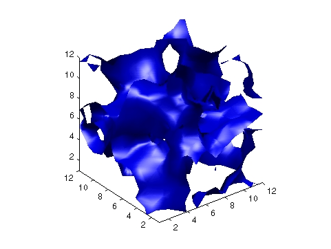
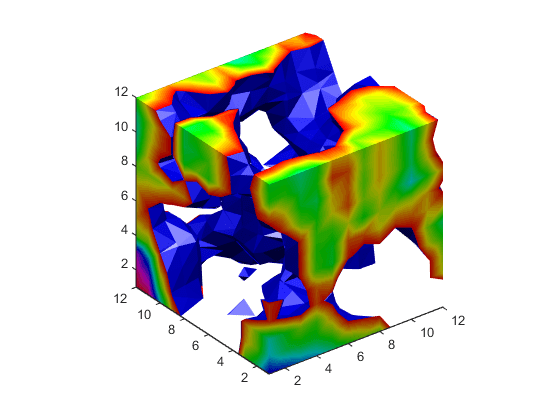

Isocaps Add Context to Visualizations
What Are Isocaps?
Isocaps are planes that are fitted to the limits of an isosurface to provide a visual context for the isosurface. Isocaps show a cross-sectional view of the interior of the isosurface for which the isocap provides an end cap.
The following two pictures illustrate the use of isocaps. The first is an isosurface without isocaps.

The second picture shows the effect of adding isocaps to the same isosurface.

Other Isocap Applications
Some additional applications of isocaps are shown in the following examples:
Defining Isocaps
Isocaps, like isosurfaces, are created as patch graphics objects. Use the
isocaps command to generate the
data to pass to patch. For example:
patch(isocaps(voldata,isoval),... 'FaceColor','interp',... ...'EdgeColor','none')
creates isocaps for the scalar volume data voldata at the value
isoval. You should create the isosurface using the same
volume data and isovalue to ensure that the edges of the isocaps
fit the isosurface.
Setting the patch FaceColor property
to interp results in a coloring that maps the data values spanned
by the isocap to colormap entries. You can also set other patch properties to
control the effects of lighting and coloring on the isocaps.
Adding Isocaps to an Isosurface
This example illustrates how to set coloring and lighting characteristics when working with isocaps. There are five basic steps:
1. Prepare the Data
This example uses a 3-D array of random (rand) data to define the volume
data. The data is then smoothed (smooth3).
data = rand(12,12,12); data = smooth3(data,'box',5);
2. Create the Isosurface and Set Properties
Use isosurface and patch to create the isosurface
and set coloring and lighting properties. Reduce the AmbientStrength, SpecularStrength, and DiffuseStrength of the reflected light to compensate for the
brightness of the two light sources used to provide more uniform
lighting.
Recalculate the vertex normals of the isosurface to produce smoother lighting
(isonormals).
isoval = .5; h = patch(isosurface(data,isoval),... 'FaceColor','blue',... 'EdgeColor','none',... 'AmbientStrength',.2,... 'SpecularStrength',.7,... 'DiffuseStrength',.4); isonormals(data,h)
3. Create the Isocaps and Set Properties
Define the isocaps using the same data
and isovalue as the isosurface. Specify interpolated coloring and select a
colormap that provides better contrasting colors with the blue isosurface than
those in the default colormap (colormap).
patch(isocaps(data,isoval),... 'FaceColor','interp',... 'EdgeColor','none') colormap hsv
4. Define the View
Set the data aspect ratio to [1,1,1] so that the display is
in correct proportions (daspect). Eliminate white
space within the axes and set the view to 3-D (axis
tight, view).
daspect([1,1,1]) axis tight view(3)
5. Add Lighting
To add fairly uniform lighting, but still take advantage of the ability of
light sources to make visible subtle variations in shape, this example uses two
lights, one to the left and one to the right of the camera (camlight). Use Gouraud lighting
to produce the smoothest variation of color (lighting).
camlight right camlight left
